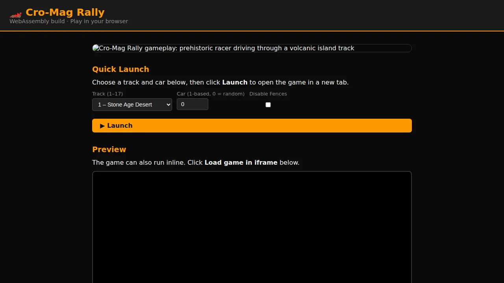

Quick Launch
Choose a track and car below, then click Launch to open the game in a new tab.
Preview
The game can also run inline. Click Load game in iframe below.
Level Editor Integration
URL Parameters
Append parameters to the game URL to control startup:
?track=3 # which track to load (1-based, default 1) ?car=2 # which car to use (1-based, default random) ?noFenceCollision=1 # disable fence collision ?levelOverride=:Terrain:MyLevel.ter # use custom terrain file
JavaScript Cheat API
Once the game is running you can call these from the browser console or from a parent frame:
// Toggle fence collisions at runtime GameCheat.setFenceCollision(0); // disable GameCheat.setFenceCollision(1); // enable // Query current state GameCheat.getFenceCollision(); // returns 0 or 1
Loading a Custom Level File
You can inject a custom .ter file into the game's virtual filesystem from JavaScript:
// From a parent page or the browser console:
fetch('/path/to/MyLevel.ter')
.then(r => r.arrayBuffer())
.then(buf => {
gameWindow.loadLevelOverride(buf, ':Terrain:MyLevel.ter');
// Then reload the game iframe with ?levelOverride=:Terrain:MyLevel.ter
});